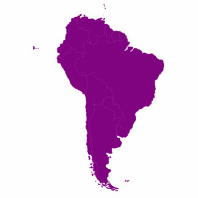
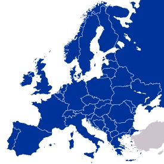
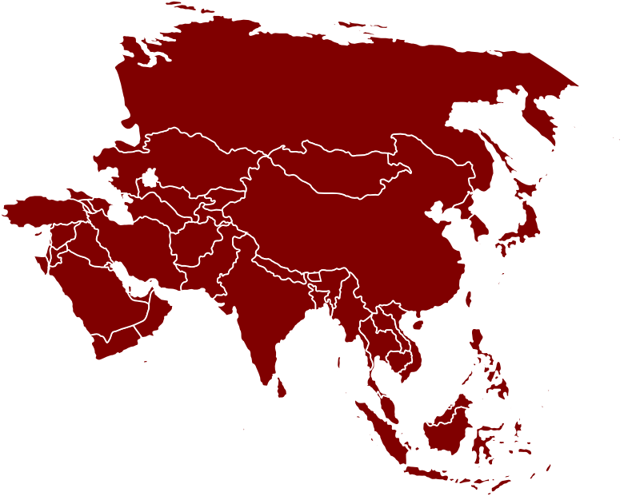

|
 |
 |
 |  |  |  |
 |
|---|
| »Carpe diem« oziroma »Užij dan« se glasi eden izmed latinskih pregovorov in mislim, da ta pregovor predstavlja kar najin življenjski moto. Sva Daša in Klara: najboljši prijateljici, zagreti raziskovalki, perspektivni fotografinji in neutrudljivi izletnici. Z najveèjim veseljem in užitkom potujeva po svetu in odkrivava dih jemajoèe razglede in zlate sonène zahode. Odloèili sva se tudi, da nekoè skupaj prepotujeva svet in tako, na najboljši možen naèin zaèutiva utrip Zemlje. Pravijo sicer, da je življenje na Zemlji drago ampak midve praviva, da imamo zato vsako leto brezplaèno potovanje okoli Sonca. |
|
| |
Na najini spletni strani, ki sva jo oblikovale pri pouku informatike je zbranih nekaj najbolj zanimivih morda tudi neverjetnih dejstev in ugotovitev o našem planetu. Predstavljenih je vseh sedem celin in njihovih znaèilnosti. Na ta naèin sva združili koristno znanje geografije in informatike ter uživali ob prijetnem »popotovanju« skozi pokrajine. Upava, da se boste skozi tukajšnji svet v malem sprehodili polni dobre volje in življenja. Morda se boste tudi kaj novega nauèili. Želiva vam, da to znanje dobro izkoristite, morda podelite s katerim izmed znancev in tako pripomorete h kakovostnejšemu življenju na našem planetu pa tudi h kakovostnejšemu življenju našega planeta. Za konec pa vam želiva samo še »Carpe diem!« Daša Pokliè in Klara Jeseniènik |